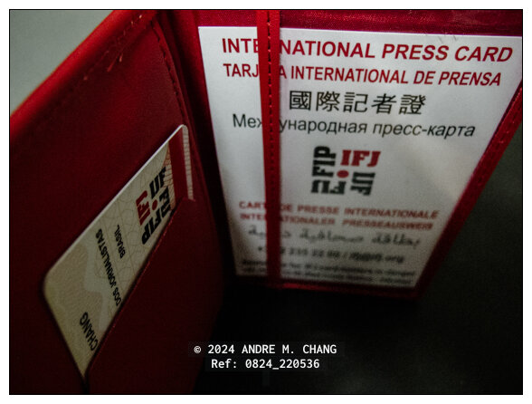

ANDRÉ M. CHANG_
Narrador visual nacido en Brasil y criado en un ambiente multicultural.Niño/Individuo de la Tercera Cultura (NTC/ITC):
Ciudadano del Mundo
• Periodista visual independiente
• Fotógrafo multidisciplinario
Registro Profesional
"Registrado como Periodista, en el rol de Reportero fotográfico", por la "Superintendencia Regional del Trabajo y Empleo" (Superintendência Regional do Trabalho e Emprego — SRTE) del "Ministerio del Trabajo y Empleo" (Ministério do Trabalho e Emprego — MTE) de Brasil.Organizaciones Profesionales
• 2024‐2026: Portador de la Tarjeta Internacional de Prensa, también conocida como Carnet Internacional de Prensa — CIP, expedida por la Federación Internacional de Periodistas — FIP, emitida en Brasil por la "Federación Nacional de Periodistas" (Federação Nacional dos Jornalistas — FENAJ).• 2024: Miembro del "Sindicato de Periodistas Profesionales del Estado de San Pablo" (Sindicato dos Jornalistas Profissionais no Estado de São Paulo — SJSP).
• 2014‐2017: Miembro de la "Asociación de Reporteros Fotográficos y Cinematográficos del Estado de San Pablo" (Associação de Repórteres Fotográficos e Cinematográficos no Estado de São Paulo — ARFOC‐SP).
 Carnet de Registro Profesional
Carnet de Registro Profesional
 Sistema de Registro Profesional
Sistema de Registro Profesional
 Tarjeta Internacional de Prensa
Lenguas
• Primera, hablante nativo: Portugués, hokkien taiwanés (min nan taiwanés), español y mandarín.• Segunda: Inglés.
Educación / Cursos
2024: Técnicas de investigación digital.2024: Cooperación internacional y asistencia jurídica mutua en asuntos delictivos.
2024: Inteligencia de fuente abierta.
2006: Graduado con un grado asociado en Diseño Industrial.
2006: Fotografía digital + Flash creativo.
2000: HTML (Lenguaje de marcas de hiperTexto).
1999: Técnico en hardware PC, Windows NT 4.0, Visual FoxPro 6.0.